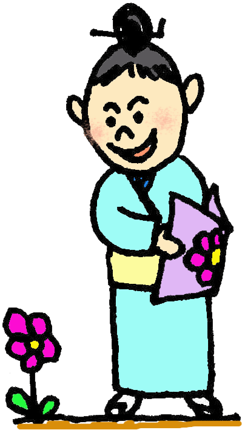
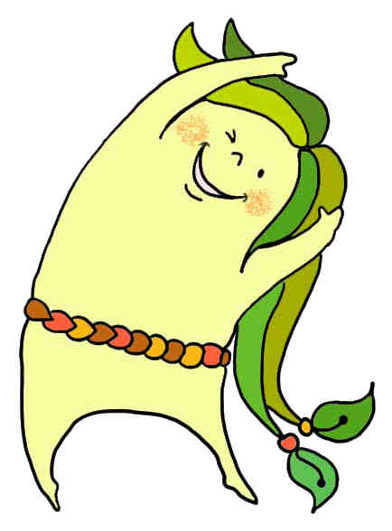
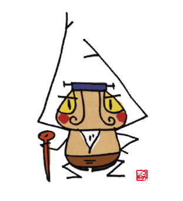

きじむん
千原池の森で生まれたキジムン。図書親方と仲良くなりよく図書館に遊びに来る。
- 書庫に隠れていて学生さんにイタズラするのが楽しみ
- 千原池の亀にいじめられたことがあるので苦手。
- 好きな食べ物
- 魚の目玉
- 嫌いな食べ物
- たこ
千原池の森で生まれたキジムン。図書親方と仲良くなりよく図書館に遊びに来る。
図書館と資料をこよなく愛する好青年。A型。ショッピング大好き。着物の色や帯の柄、かんざしをさす角度にこだわりをもつ。いつも図書館で美術。デザイン系の本を読み手本にしている。日課：
こまかい設定はよく知りません…
風樹館のキャラクターです。詳細はよく知りません。
| みだし | みだし2 | みだし3 |
|---|---|---|
| abc | cdf | gfh |
| abc | cdf | gfh |
| abc | cdf | gfh |
| abc | cdf | gfh |